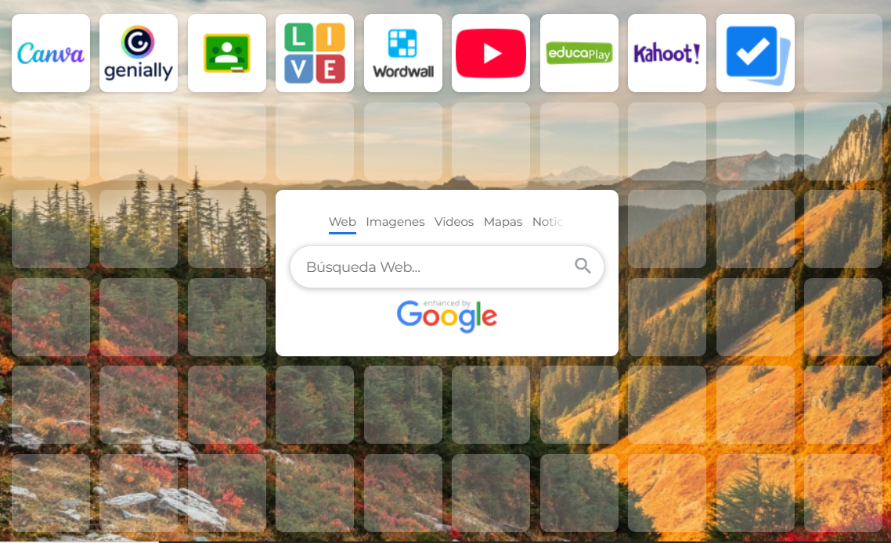

Texto
Recursos docentes
En este apartado se recopilan herramientas y recursos digitales útiles para la planificación y desarrollo de la Situación de Aprendizaje.
Estos recursos permiten organizar materiales, crear actividades digitales y facilitar la atención a la diversidad mediante metodologías activas y herramientas colaborativas.
